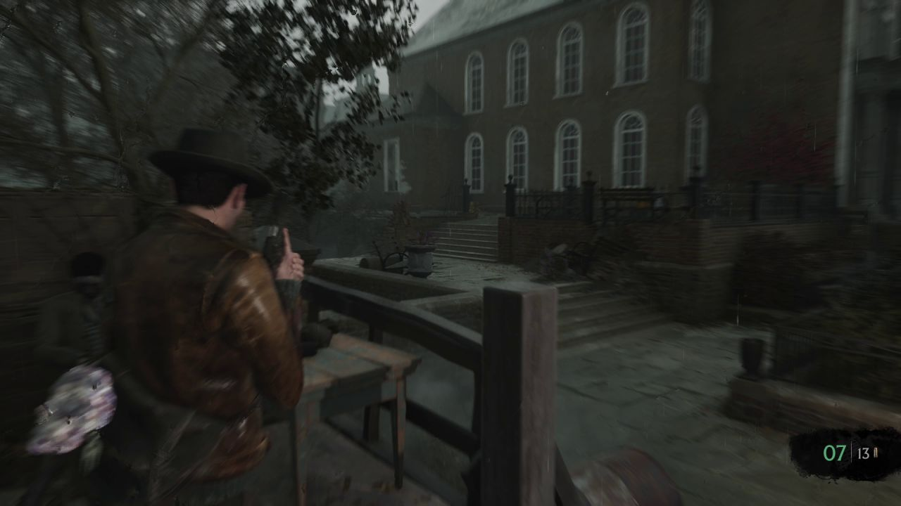
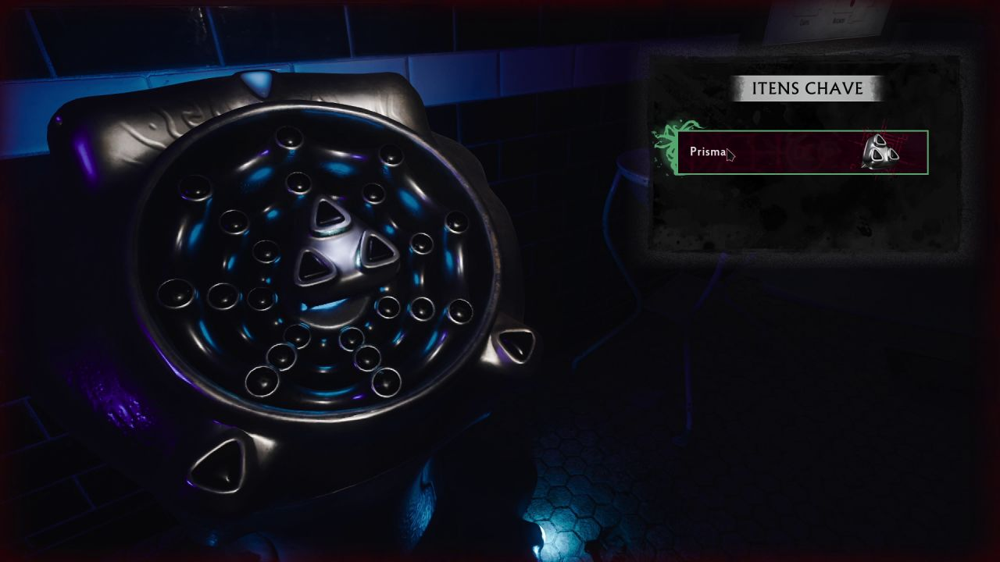
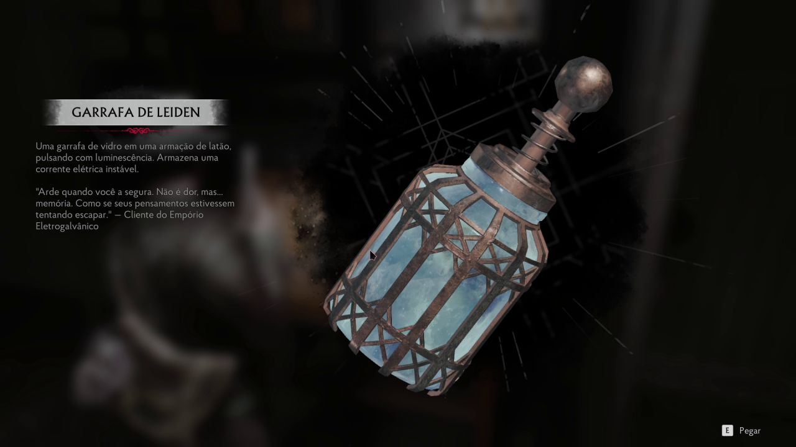
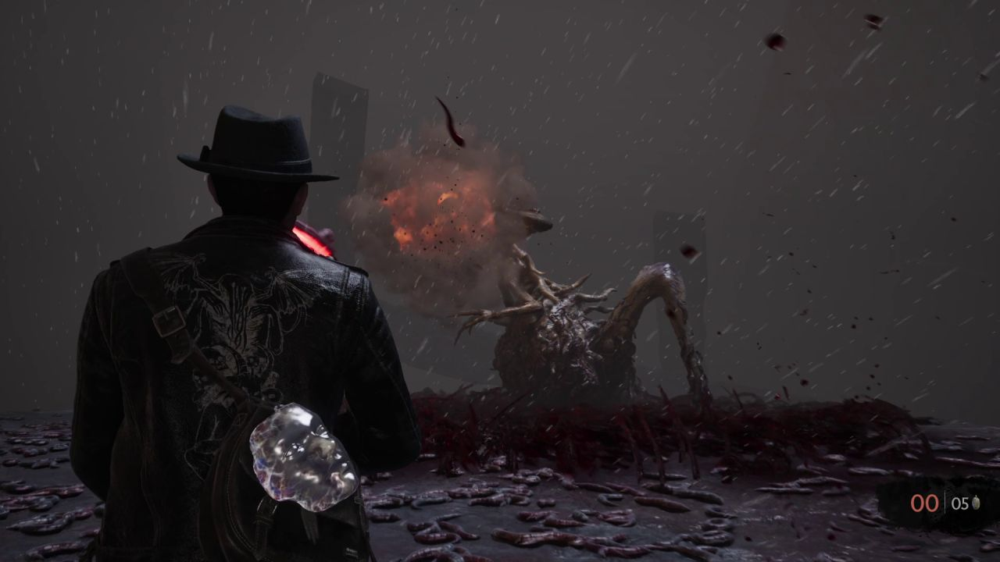

Aviso de spoilers. Esta guía recorre toda la campaña de The Sinking City 2: los códigos de cajas fuertes y compuertas, los acertijos que bloquean el camino, los consejos para los jefes y el final. Los nombres de lugares y objetos son traducciones nuestras; entre paréntesis va el nombre en inglés cuando ayuda a reconocer carteles y lugares. Nuestros videos están en portugués de Brasil, así que el texto de las capturas aparece en portugués. Todas las imágenes vienen del gameplay de Bora de Play.
Cómo usar esta guía
Primera partida. Sigue los capítulos en orden. Las salas seguras tienen baúl, banco de trabajo y mesa de talentos; vuelve a ellas antes de cada zona nueva. Guarda en el baúl lo que no vayas a usar pronto, porque el inventario se llena rápido. Cada vez que encuentres un bolígrafo activador E.R.C., busca la caja E.R.C. más cercana: guardan mejoras de armas y de inventario.
¿Ya estás jugando? Busca en la tabla el punto donde te atascaste.
| Dónde me atasqué | Código o solución | Ir a |
|---|---|---|
| Caja fuerte del apartamento | 1908 | Un nuevo día |
| Panel de fusibles de la compuerta | I a la izquierda, T arriba, L a la derecha | El panel de la compuerta |
| Compuerta de la iglesia | 1672 | Iglesia de la Redención |
| Obelisco y tridente | Símbolos en el orden de la nota | El obelisco |
| Ballena que bloquea el camino al hotel | Grúa con combustible y engranaje | Grúa y ballena |
| Caja fuerte de la habitación del hotel | 2137 | Hotel Arrecife del Diablo |
| Panel de ventilación | 1 (2×), 2 (4×), 3 (2×), palanca, 1 (1×) | Panel de ventilación |
| Candado del depósito del hospital | 1308 | Hospital Akeley |
| Aparato de los cerebros | 13, 05, 36 | Aparato de frecuencia |
| Caja fuerte del vestuario del mercado | 1496 | Mercado de pescado |
| Caja fuerte de la oficina abandonada | 6294 | El pasado del mercado |
| Shoggoth | Activa los tres aparatos y dispara a los ojos | Jefe: Shoggoth |
| Jefe final | Dispara a la cabeza y elimina las invocaciones | Jefe final |
Ruta de la campaña
- Un nuevo día
- Anexo de la biblioteca y Corentin
- Iglesia de la Redención
- Bomberos, grúa y ballena
- Imprenta
- Hotel Arrecife del Diablo
- Hospital Akeley
- Mercado de pescado y Shoggoth
- Cuevas, portal y final
1. Un nuevo día
Objetivo: abrir la compuerta y seguir en barca por la ciudad inundada.
- Explora la casa, baja la escalera hasta la calle y toma la barca. En la primera compuerta, tira de la palanca en el edificio de la ventana. El panel eléctrico no tiene fusibles.
- La sala con el símbolo extraño en la puerta es la sala segura. La nota del mostrador habla de los fusibles.
- La caja fuerte del apartamento pide el año en que abrió la tienda de al lado. La fachada de la Allen Radio Store dice desde cuándo existe: el código es 1908. En nuestro gameplay, el primer intento fue restar años a partir de una pista, pero la respuesta es directamente el año del cartel.
- Rompe los barriles delante del agujero del suelo y baja. Abre el atajo del primer piso, entra en la tienda de electricidad y toma los fusibles de los estantes del fondo.
El panel de la compuerta
Los fusibles funcionan como conectores y deben unir cables del mismo color. Coloca el fusible en forma de I a la izquierda, el de forma de T arriba y el de forma de L a la derecha, girando cada pieza hasta que los cables se encuentren. Después sigue en barca por las otras compuertas hasta el edificio rojo.


2. Anexo de la biblioteca y Corentin
Objetivo: llegar a la sección restringida y hablar con Corentin.
- En el anexo, usa la primera manivela para mover las estanterías. Caes al piso de abajo. Usa la segunda manivela y luego otra vez la primera para llegar a la sección restringida.
- Toma el libro brillante y aparta el armario de la puerta del fondo.
- Habla con Corentin. Toma el bolígrafo activador E.R.C. y abre la caja E.R.C. del primer piso del anexo para mejorar la pistola. Vuelve con Corentin y sal por la ventana.
3. Iglesia de la Redención
Objetivo: liberar el tridente y devolverlo al santuario.
- La palanca de la compuerta de la iglesia pide el año de la campana. La iglesia se construyó en 1667 y la campana tardó media década más en fabricarse e instalarse. El código es 1672.
- Consigue la llave de la iglesia por el camino inundado de la derecha. La sala segura de la iglesia desbloquea la mesa de talentos.
- Toma la llave de estrella del cuerpo, sube la escalera de la iglesia y abre la puerta de arriba. Recoge el tridente y la nota del escritorio.
El obelisco
- Coloca el tridente en el obelisco. La nota de la torre da el orden de los símbolos: introdúcelos en ese orden y confirma.
- Al confirmar, un rayo cae sobre el obelisco. Aléjate en cuanto confirmes.
- Recupera el tridente y devuélvelo a su encaje en la salita de la iglesia.
- En las criptas, usa la llave de estrella en una puerta y toma la placa de impresión C. En el altar, toma la daga de la estatua y úsala en el altar para bajar el ascensor. Derrota a la criatura de la boca extraña, vuelve a subir y recoge la esencia de sueño.


4. Bomberos, grúa y ballena
Objetivo: cargar combustible y reparar la grúa para quitar la ballena del camino al hotel.
- En el Silver Eel, toma la nota y la llave del cementerio del mostrador. La sala segura de al lado tiene radio y escopeta.
- La grúa no tiene combustible y le falta un engranaje. En el cuartel de bomberos, el bidón de gasolina del depósito está detrás de un charco electrificado. Sube y tira de la palanca de energía antes de tomar el bidón. Al salir, prepárate para oleadas de enemigos.
- El engranaje de acero está en la imprenta (siguiente capítulo), detrás de la puerta de la luz roja. Vuelve a la grúa con los dos objetos.
- Carga la grúa y coloca el engranaje. Mueve el brazo a la izquierda, engancha la garra roja de la calle, levántala, muévela a la derecha, suéltala y bájala sobre la ballena para despejar el camino.
5. Imprenta
Objetivo: reunir las tres placas e imprimir.
- Sube por la plataforma, pasa por la abertura y cae por el suelo. La placa A está en una salita del edificio detrás de la ventana.
- La llave A.P.H. cuelga de la pared cerca de una sala segura. Abre la verja del depósito y la puerta de la luz roja, en el piso de abajo, donde está el engranaje de acero. La caja E.R.C. de ese piso amplía el inventario.
- En el apartamento junto al cuartel de bomberos, que se abre al mover la garra roja, están la placa B y otro bolígrafo E.R.C.
- Con las placas A, B y C, usa la impresora de la sala secreta. Deja todos los cuadrados dorados para obtener la culata de la escopeta, o todos plateados para obtener esencia de sueño.
6. Hotel Arrecife del Diablo
Objetivo: abrir los tres baúles de Lorelai, desbloquear el sótano y llevar a Lorelai hasta Corentin.
- Sube por la escalera roja hasta el bar. Abre las puertas dobles para crear un atajo hasta la barca. El mapa está en la pared de la salita.
- En la habitación del tercer piso, detrás del armario, la caja fuerte usa el código 2137. Las pistas de la habitación hablan de corazones y pecados: dos, uno, tres y siete. Dentro hay una mejora de pistola y munición.
- Baja por el agujero del suelo del segundo piso. La llave del personal está en una mesa. Abre la sala del personal, donde están las fichas de Lorelai.
- Cada baúl de Lorelai consume una ficha y guarda una llave. En el baúl del segundo piso, un ruido causa daño continuo: destruye los cuatro aparatos (uno de ellos en el baño) antes de tomar la llave. El segundo baúl está en la habitación 303 y el tercero en una mesa del primer piso.
- En el sótano, usa las tres llaves en la puerta decorada con Lorelai.
El panel de ventilación
En la salita del sótano, alinea los indicadores pulsando: botón 1 dos veces, botón 2 cuatro veces, botón 3 dos veces, tira de la palanca y pulsa el botón 1 una vez más. El subfusil está en la mesa junto a la máquina.
Traslado de Lorelai. A mitad del traslado a la barca, el mecanismo se detiene. Tira de la palanca con la luz roja. Aparece un enemigo grande: dispara a las piernas hasta que se arrodille y luego a las ampollas de la espalda. Usa la manivela de la barca para bajar a Lorelai, vuelve al anexo y entrégasela a Corentin. Al final de la escena, toma la máscara del escritorio.


7. Hospital Akeley
Objetivo: cargar el Prisma en las tres estaciones y llegar al teatro anatómico.
- La sala segura está a la derecha de la entrada. Baja a la sala de tratamiento y tira de la palanca de la salita para quitar la protección del aparato frente a la burbuja roja. Toma el Prisma y huye por el pasillo de la izquierda cuando suene la alarma.
- Una criatura de tinta te persigue por el hospital. No muere: después de recibir suficiente daño desaparece un rato. Evítala siempre que puedas.
- Carga el Prisma en las tres estaciones de colores. En cada una, gira los tres anillos hasta que los símbolos correctos formen una línea con el triángulo. Los símbolos están repartidos por el hospital y aparecen en la pestaña de investigación: la estación azul está en la sala de tratamiento, la amarilla en la salita de la capilla y la rosa en la sala de manipulaciones.
Máscaras y llaves
| Objeto | Dónde | Abre |
|---|---|---|
| Rostro de mujer | Recipiente de la cabeza en la morgue | Puerta de la entrada y puerta del fondo de la morgue |
| Rostro de anciano | Mitades en el recipiente del ala oeste y en el consultorio de ortesis. Únelas en el taller de prótesis | Zona del anciano y sala de materiales |
| Rostro del cirujano jefe | Más adelante en la campaña | Despacho del cirujano jefe y paso de la morgue al teatro anatómico |
| Ácido antióxido | Sala del póster, en el piso de arriba | Puerta de la escalera central y puerta del depósito |
| Llave del caduceo | Balcón de la sala del personal | Farmacia y puerta cerca del ambulatorio |
El candado del depósito usa el código 1308, sacado de los documentos de la zona. Dentro hay una mejora de subfusil.
El aparato de frecuencia
En la sala de radio, tres cerebros en frascos dan las pistas de las tres frecuencias. Ajusta el aparato a 13, 05 y 36. Suelta esencia de sueño.
Con el Prisma cargado, úsalo en el aparato del teatro anatómico. En el jardín terapéutico, un enemigo grande escupe veneno: dispara al punto rojo del pecho. En la sala de mantenimiento y en la cerca final, resiste las oleadas de enemigos antes de la escena del teatro.


8. Mercado de pescado y Shoggoth
Objetivo: reunir las botellas de Leyden y abrir camino hasta el barco.
- Sube por la escalera del mercado. La sala segura está justo debajo.
- En la báscula del piso del mercado, toma el cortapernos. Corta las cadenas de la puerta del piso y sigue hasta la cámara frigorífica, donde están la llave del ojo de pez y la nota de la puerta del copo de nieve.
- Las botellas de Leyden abren las puertas con estrella de mar: coloca una botella en la estrella para liberar el paso. La primera está en la obra en construcción.
- La llave del copo de nieve cuelga de la pared de la sala de subastas. Derrota al enemigo peligroso de la sala antes de tomarla.
- La caja fuerte del vestuario usa 1496. La pista del último número parece 16, pero es 6. Dentro está la mejora del lanzagranadas.
- La puerta del almacén de sal pide cuatro números romanos. Las guías consultadas no coinciden en el tercero; prueba I, IV, IX, XVI y, si no abre, I, IV, XI, XVI.
El pasado del mercado
- Una protección bloquea la oficina abandonada. En el cuadro de la cámara frigorífica, dispara a Freddie, el segundo por la derecha, el que no toca ningún instrumento. Toma la urna y úsala en la protección.
- Interactúa con la botella de Leyden de la mesa para entrar en el recuerdo y habla con los fantasmas de la oficina y de la tienda antigua. La caja fuerte de la oficina usa 6294 y guarda otra botella.
- Usa el corazón de piedra en la estatua extraña. Dispara a los brazos en este orden: persona arrodillada (brazo derecho), pulpo (arriba a la izquierda), estatua del Profundo (abajo a la derecha), reloj de arena (izquierda) y botella de Leyden (abajo a la izquierda). Toma el corazón de hielo.
- Usa el corazón de hielo en la estatua congelada de la cámara frigorífica para obtener la botella descargada. Recárgala en el aparato de la obra, resistiendo las oleadas de enemigos y volviendo a encender los interruptores de las luces rojas.
- Coloca las tres botellas en las tres estrellas de mar de la bodega del barco naufragado. Dispara de lejos a las ampollas, baja por la bodega hasta la sala segura al pie de la escalera y prepárate para el jefe.
Jefe: Shoggoth
Disparar al cuerpo no sirve. Activa los tres aparatos extraños de la arena para que el Shoggoth muestre los ojos y dispárales. Repite: en cada ronda se vuelve más agresivo, así que mantén la distancia y prioriza los aparatos.

9. Cuevas, portal y final
Objetivo: atravesar el portal y enfrentar al jefe final.
- Atraviesa las cuevas. En la puerta extraña hay una nota y, en una caja, la llave robusta.
- En la tienda grande, abre el baúl marrón con la llave robusta y toma la piedra sagitada. Úsala en la puerta extraña frente a la tienda.
- Pasa por el columbario hasta la sala del portal. En las salas siguientes, recoge el capullo grabado y los bolígrafos E.R.C. La cripta tiene una emboscada con muchos enemigos.
- Coloca el capullo en el aparato frente al portal, alinea las piezas de todos los lados y tira de la palanca del generador. Atraviesa el portal, toma la barca hasta el final y abastécete en la zona segura antes de la gran puerta.
Jefe final
Apunta a la cabeza con todo lo que tengas. El jefe invoca enemigos y hace ataques de área: esquiva, elimina las invocaciones que se acerquen y vuelve a disparar a la cabeza. Después de la pelea, camina con Faye hasta el altar para ver el final.


¿Quieres entender toda la historia? El canal tiene un video con la historia y el final explicados (en portugués) ↗.
Referencias de ruta y códigos. Guía completa — GameSpew, Códigos y acertijos — The Sinking City 2 Guides, Cajas fuertes y candados — GamerHour.
↑ Volver arriba